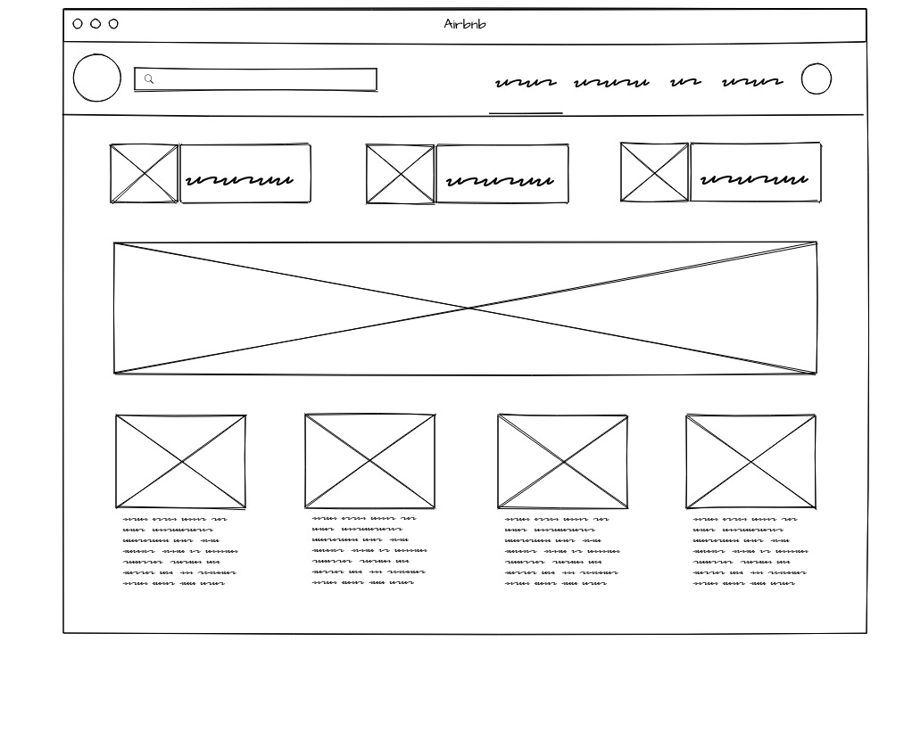

Elicitação
2018.2
Storytelling | BrainStorm Introspecção | Prototipação | Análise de protocolo | Priorização | Moscow |Storytelling
O Storytelling foi utilizado na elicitação de requisitos de maneira a forçar o desenvolvimento de possíveis situações a serem vividas pelos usuários, por meio de pequenas histórias. A partir dessas histórias é possível visualizar com mais clareza os requisitos envolvidos em cada situação simulada.
História dos 10 gatos
Uma vez devido ao fato de necessitar de uma hospedagem mais barata na cidade de pirenópolis, estava no meu computador e acabei chegando ao airbnb. Selecionei meu destino e a data que gostaria de me hospedar, li as informações da acomodação e mandei as fotos para minha amiga. Quando chegamos ao local a anfitriã foi bastante simpática e nos mostrou a acomodação, porém ficamos muito surpresos ao nos deparar com vários gatos (mais de 10) o que não estava avisado na descrição do anúncio. Foi muito constrangedor pelo motivo de ter alergia aos gatos, o que acabou interferindo na minha experiência. Mesmo com os contratempos e problemas que tivemos gostamos bastante do local, bastante organizado e avaliamos bem a anfitriã (o aplicativo possui uma aba para avaliar quando a hospedagem acaba.
Primeira experiência com Airbnb
Esse ano tive a oportunidade, pela primeira vez, de utilizar o aplicativo do Airbnb. O app já estava instalado no meu smartphone a um tempo, mas nunca precisei realmente utilizá-lo, tinha baixado por curiosidade. Mas esse ano fiz uma viagem para São Paulo durante as férias e precisei de um lugar para ficar que fosse mais barato que um hotel e com uma localização que me favorecesse. Primeiramente combinei com minha namorada que já estava em São Paulo de nós alugarmos juntos um lugar para ficar através do Airbnb e então comecei a buscar lugares no aplicativo. Primeiramente defini a cidade na busca, e comecei olhando as acomodações que apareciam na busca, priorizando o baixo custo e a localização. Acabei achando alguns lugares muito bons de acordo com meus critérios, mas que não possuíam vaga para a data que eu planejava ficar na cidade, então decidi aplicar mais um filtro na busca, a data de estadia. Encontrei uma acomodação que me agradou, mas me deparei com um problema, eu precisava parcelar o valor da hospedagem no cartão de crédito e encontrei um post no fórumComo-funcionam-os-parcelamentos-de-pagamento/td-p/10085). do Airbnb falando que o parcelamento só pode ser feito através do site, não funciona no aplicativo. Fiz a reserva através do site com meus dados e da minha namorada que seria a segunda hóspede. Ao finalizar a compra o anfitrião entrou em contato comigo através do aplicativo pedindo meu número de RG para identificação. Ao chegar em São Paulo fui para o endereço da acomodação, chegando lá informei meus dados para o porteiro e ele me deu a chave do apartamento. Durante o período de estadia não tive nenhum problema, mas também não tive nenhum contato com o anfitrião. Ao finalizar o período de hospedagem deixei a chave com o porteiro. Após algumas horas o aplicativo do Airbnb solicitou que eu avaliasse a acomodação, escrevesse um feedback privado e um público para o anfitrião.
Anfitrião Ausente
Resolvi recorrer ao AirBnb para minha hospedagem no mochilão que realizei pela Europa por conta do preço. Planejei passar por 4 cidades: Amsterdã, Berlim, Bruxelas e Praga, realizando, portanto, quatro hospedagens no AirBnb. A minha experiência foi ótima em todas as cidades, exceto em Bruxelas.
Um dia antes da minha viagem o anfitrião de Bruxelas entrou em contato pedindo para que eu cancelasse minha reserva, eu disse que não seria possível devido ao prazo e entrei em contato com a AirBnb que confirmou a reserva. Apesar da empresa ter confirmado minha reserva, ao chegar no local da acomodação o anfitrião estava ausente, entrei em contato com a empresa pelo aplicativo no celular, entretanto como já era noite, e pela demora na resposta da empresa, tive que me hospedar em um hotel. A AirBnb só me respondeu 6 horas depois cancelando a reserva e me dando o reembolso integral.
Apesar desse problema, minha experiência nas demais acomodações foi ótima. Serviço de qualidade e, acima de tudo, acessível, barato. Não paguei mais de 90 euros para ficar 3 dias num lugar. Em Berlim paguei 62 euros 3 dias, em Amsterdã 86 euros 5 dias e em Praga 58 euros 3 dias. Exceto na Bélgica, nos outros demais lugares foi tranquilo e fui muito bem recebido. Locais sempre limpos, ambiente agradável e pessoas atenciosas. As casas geralmente tem regras que podem ser vistas nos detalhes da acomodação no site, entretanto há algumas regras simples que são avisadas pelo host ao chegar no local. Por exemplo: em Berlim a regra era sempre manter a porta do banheiro fechada; já em Praga é não andar com calçados dentro da casa para não sujar ou, como eles dizem "não trazer energias estranhas do exterior para o lado interno da casa".
A AirBNB peca um pouco quando você entra em contato- demora um pouco a responder - mas este é um ponto nocivo. Único ponto negativo que achei foi a responsabilidade deles terem confirmado uma reserva com o anfitrião que acabou estando ausente e não houve uma atitude tomada pela empresa em tempo hábil. Fora isso, tudo foi perfeito e vale muito a pena.
Resultado do Story Telling
| História | Requisito |
|---|---|
| 1, 2, 3 | O usuário deve ser capaz de realizar busca por localização |
| 1, 2 | O usuário deve ser capaz de filtrar as acomodações por data |
| 1, 2 | O usuário deve ser capaz de fitlrar as acomodações por preço |
| 1, 2, 3 | O usuário deve ser capaz de realizar reserva |
| 1, 2, 3 | O usuário deve ser capaz de especificar a data da reserva |
| 1 | O anfitrião deve ser capaz de adicionar as fotos da acomodação |
| 1 | O usuário deve ser capaz de efetuar o pagamento pelo aplicativo |
| 3 | O anfitrião deve ser capaz de adicionar as regras da acomodação |
| 1, 3 | A AirBnb deve oferecer transparência aos usuários |
| 3 | O tempo de resposta da empresa deve ser rápido, especialmente na data do checkin |
| 1, 2 | O anfitrião deve ser capaz de especificar os detalhes da acomodação(quartos, camas, animais de estimação, limite de quantidade de hóspedes, etc) |
| 1, 2, 3 | O anfitrião e hóspede devem poder se comunicar pelo aplicativo |
| 2 | O usuário deve especificar a quantidade de hóspedes que ficarão na acomodação |
Brainstorm
O Brainstorming é uma técnica na Engenharia de Requisitos. Ela consiste em um grupo de pessoas de diferentes áres levantando opiniões e trocando ideias sobre determinado assunto.
O brainstorming também foi usado nas reuniões para levantar os requisitos do airbnb. Exemplo de Brainstorm da equipe
Exemplo de Brainstorm utilizado pela equipe:

Introspecção
A introspecção é uma é uma técnica muito utilizada na etapa de elicitação. Ela consiste em entender as funcionalidades importantes de um sistema, de forma que ele funcione.
A equipe utilizou a introspecção na etapa de levantamento de requisitos. Os integrates fizeram uma atividade que consistia em se colocavam no lugar de um usuário realizando dada funcionalidade. Essa etapa foi feita sem usar o sistema, somente com o que os integrantes se lembravam e conheciam do mesmo. Isso facilitou a elicitação dos requisitos funcionais.
Imaginamos entrando pelo computador no site do airbnb procurando por uma hospedagem no rio de janeiro de um quarto, deve ser possivel se cadastrar para que os dados fiquem seguros e salvos, deve ter uma parte para pesquisar por localização onde vou procurar pela minha hospedagem no Rio de Janeiro. Ao achar uma hospedagem que me agrade deve ter uma parte onde estão as fotos e regras sobre o local, incluindo uma pequena descrição do anfitrião caso tenha. Depois de realizar a reserva escolhendo a data de saida e data de entrada o usuário deve ter a opção de cancelar caso tenha um contratempo, caso contrário ele deve prosseguir para o pagamento, devem ter possibilidades de pagamentos como cartão de crédito, paypal, boleto bancário ou transferência. É importante lembrar que a segurança é um fator muito importante para que o usuário se sinta confortavel.
Resultado:
| Número | Requisito |
|---|---|
| 1 | O usuário deve ser capaz de cancelar uma reserva. |
| 2 | O anfitrião deve ser capaz de cancelar uma reserva. |
| 3 | O anfitrião deve ser capaz de inserir fotos da sua acomodação |
| 4 | A Airbnb deve promover anúncios de acomodações, restaurantes e esperiências |
| 5 | A Airbnb deve oferecer segurança aos usuários |
| 6 | O anfitrião deve definir a localização da acomodação |
| 7 | O anfitrião deve pagar taxas para a Airbnb |
| 8 | O hóspede deve poder realizar o pagamento com PayPal |
| 9 | O hóspede deve poder realizar o pagamento com depósito bancário |
| 10 | A Airbnb deve verificar antecedentes dos usuários |
Prototipação
Visão Genérica Web Site Protótipo de baixa fidelidade que expressa a ideia geral do layout do software como Web Site.
Página Inicial
Página de uma Categoria Selecionada
Visão Genérica App Mobile
Protótipo de baixa fidelidade que expressa a ideia geral do layout do software como App Mobile.
Página Inicial
Página de uma Categoria Selecionada
Página de um Serviço Selecionado
Página inicial do app
Protótipo de baixa fidelidade da tela home do aplicativo.
Listagem de acomodações
Detalhe de uma acomodação
Listagem de Experiências
Análise de protocolo
Análise de protocolo é uma forma de levantamento de requisitos no qual o analista analisa as partes interessadas quando estão envolvidas em algum tipo de tarefas.
Priorização
First Things First
Listagem dos requisitos priorizados utilizando a técnica First things First, a lista está ordenada de acordo com a prioridade para realização dos requisitos.